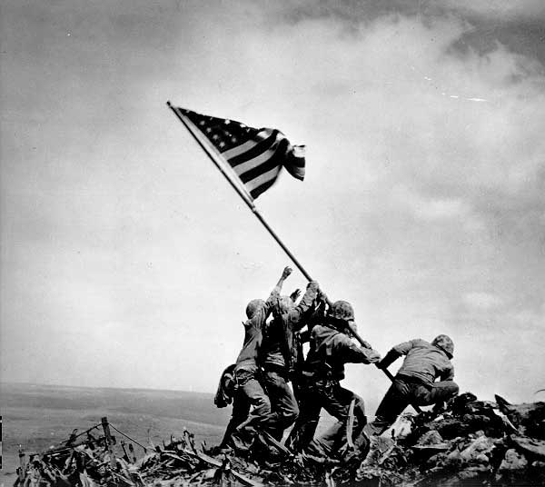

One key to communication is capturing and holding the audience’s attention. No one likes to be bored, and no communicator likes to send boring messages. To keep your communications dynamic and interesting, it often helps to use specific strategies for emphasis. Let’s examine some of these strategies and how to use them to strengthen your message.
Adding the visual dimension to a document or speech can be an excellent way to hold your audience’s interest and make your meaning clear. But be careful not to get carried away. Perhaps the most important rule to remember in using visuals is this: the visuals are to support your document or presentation, not to take the place of it. A picture may be worth a thousand words, but it is the words that really count. Make sure that your communication is researched, organized, and presented well enough to stand on its own. Whatever visuals you choose should be clearly associated with your verbal content, repeating, reinforcing, or extending the scope of your message.
Table 2.1 "Strategic Use of Visuals" lists some common types of visuals and gives examples of their strategic uses.
Table 2.1 Strategic Use of Visuals
| Type | Purpose | Example(s) |
|---|---|---|
| Photograph, Video Clip, or Video Still | Show an actual person, event, or work of art. |
Figure 2.3 Historic photo of U.S. troops raising the flag on Iwo Jima. |
| Video Trailer, Video Still | Show the visual relationships among two or more things; a shape, a contrast in size, a process or how something works. |
Figure 2.4 Diagram of a process or series of relationships. |
| Bar Chart | Show the amount of one or more variables at different time intervals. |
Figure 2.5 Different colored bars show the monthly dollar amount of sales closed by each of six sales associates for six months. |
| Pie Chart | Show the percentages of the whole occupied by various segments. |
Figure 2.6 “Pie slices” illustrate the market share held by competing products or companies. |
| Line Graph | Show the change in one or more variables progressively across time. |
Figure 2.7 Graph stock prices each day. |
| Actual Object | Show the audience an item crucial to the discussion. |
Figure 2.8 In a presentation on emergency preparedness, hold up a dust mask. In a presentation on auto safety, hold up a seatbelt. |
| Body Motion | Use your body as a visual to demonstrate an event. |
Figure 2.9 
Sit in a chair, pretend to buckle up, look at the audience, pretend to drive, and then have a mock accident, turning your chair on its side. |
Signposts (or indicators)Key words that alert the audience to a change in topic, a tangential explanation, an example, or a conclusion., are key words that alert the audience to a change in topic, a tangential explanation, an example, or a conclusion. Readers and listeners can sometimes be lulled into “losing their place”—forgetting what point is being made or how far along in the discussion the writer or speaker has gotten. You can help your audience avoid this by signaling to them when a change is coming.
Common signposts include “on the one hand,” “on the other hand,” “the solution to this problem is,” “the reason for this is,” “for example,” “to illustrate,” and “in conclusion” or “in summary.”
Like signposts, internal summaries and foreshadowing help the audience to keep track of where they are in the message. These strategies work by reviewing what has been covered and by highlighting what is coming next.
As a simple example, suppose you are writing or presenting information on how to assemble a home emergency preparedness kit. If you begin by stating that there are four main items needed for the kit, you are foreshadowing your message and helping your audience to watch or listen for four items. As you cover each of the items, you can say, “The first item,” “The second item,” “Now we’ve got X and Y in our kit; what else do we need? Our third item is,” and so forth. These internal summaries help your audience keep track of progress as your message continues. (The four items, by the way, are water, nonperishable food, first aid supplies, and a dust mask.)Federal Emergency Management Administration. (2009). Get a kit. Retrieved from http://www.ready.gov/america/getakit
With this strategy, you reinforce relationships between points, examples, and ideas in your message. This can be an effective strategy to encourage selective retention of your content.
Saying the same word over and over may not seem like an effective strategy, but when used artfully, repetition can be an effective way to drive home your meaning and help your audience retain it in their memory. Many of history’s greatest speakers have used repetition in speeches that have stood the test of time. For example, British Prime Minister Winston Churchill gave a speech in 1940 that is remembered as his “We Shall Fight” speech; in it he repeats the phrase “we shall fight” no fewer than six times. Similarly, in his famous “I Have a Dream” speech, Martin Luther King Jr. repeated the phrases “I have a dream” and “let freedom ring” with unforgettable effect.
Another form of repetition is indirect repetition: finding alternative ways of saying the same point or idea. Suppose your main point was, “global warming is raising ocean levels.” You might go on to offer several examples, citing the level in each of the major oceans and seas while showing them on a map. You might use photographs or video to illustrate the fact that beaches and entire islands are going underwater. Indirect repetition can underscore and support your points, helping them stand out in the memory of your audience.
Emphasize your message by using visuals, signposts, internal summaries and foreshadowing, and repetition.